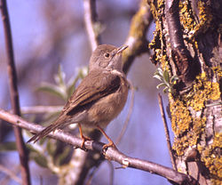
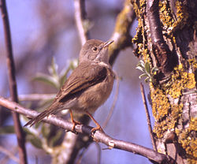

| Subalpine Warbler | |
|---|---|
|  | |
| Conservation status | |
| Binomial name | |
| Sylvia cantillans (Pallas, 1764, Italy) |
| Subalpine Warbler | |
|---|---|
|  | |
| Conservation status | |
| Binomial name | |
| Sylvia cantillans (Pallas, 1764, Italy) |
The Subalpine Warbler, Sylvia cantillans, is a small typical warbler which breeds in the southernmost areas of Europe and northwest Africa. This small passerine bird is migratory, and winters along the southern edge of the Sahara. It occurs as a vagrant well away from the breeding range, in both spring and autumn as far north as Great Britain.
Like most Sylvia species, it has distinct male and female plumages. The adult male has a grey back and head, brick-red underparts, and white malar streaks ("moustaches"). The female is mainly brown above, with a greyer head, and whitish below with a pink flush. The Subalpine Warbler's song is fast and rattling, and is similar to the Lesser Whitethroat.
This bird seems to be related to the Sardinian Warbler-Menetries' Warbler superspecies. They all have white malar areas, the heads being dark above in adult males, and naked eye-rings. These three species are related to a superspecies consisting of Rüppell's Warbler and the Cyprus Warbler, which also share the white malar area with blackish above.(Shirihai et al. 2001, [2] Jønsson & Fjeldså 2006 [3]) The Subalpine Warbler is divided into three distinct subspecies groups, which may possibly be sufficiently diverged to qualify as three separate species (Shirihai et al. 2001)[2]. The three groups have differing male plumages, distinctive calls, and are allopatric; further study is needed.
These groups are as follows (areas given below are breeding ranges; all forms winter in Africa):
Eastern Subalpine Warbler differs from the nominate race by its deeper blue-grey upperparts, a blackish mask on the lores and ear-coverts, brick reddish-brown coloration confined to the throat and breast and sharply demarcated from a largely white belly, paler flanks and a wider white submoustachial stripe. [5]
This is a bird of dry open country, often on hill slopes, with bushes for nesting. The nest is built in low shrub or gorse, and 3-5 eggs are laid. Like most "warblers", it is insectivorous, but will also take berries.

{kind=link}